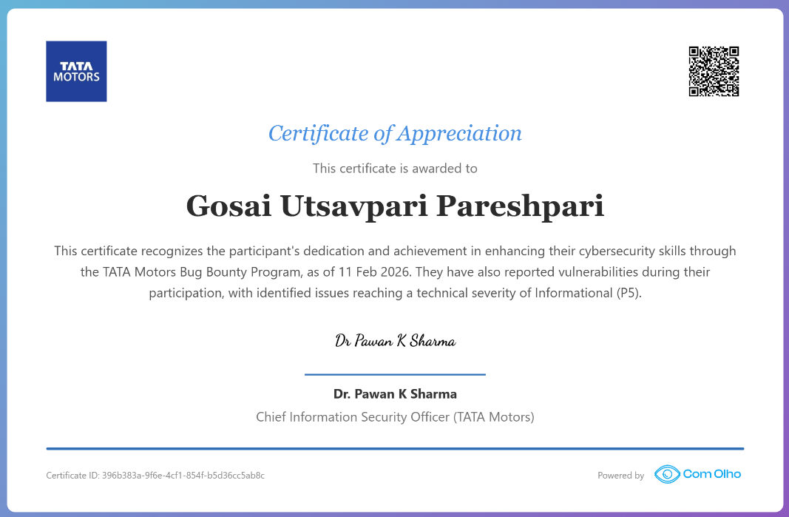

Hello Hackers! 👋
I hope you all are doing well and continuing to secure our digital world. 🌍🔒
First of all, I want to apologize for the one-month gap in posting my stories. During this time, I have been busy with digital forensics and cybercrime investigation work, so I couldn't spend much time on bug bounty hunting or writing about my findings.
Now, let's get started with my latest journey!
🕵️ The Beginning
Everything started in May 2025, when I decided to hunt for vulnerabilities in TataMotors, one of my favorite automobile brands in India. 🚗❤️
I searched multiple bug bounty platforms looking for their program, but unfortunately, I couldn't find any active one. The program on BugBase.ai was paused, and the ComOlho program was also inactive at that time.
Instead of giving up, I decided to report my findings directly through Tata Motors' security email addresses. 📧
🐞 My First Finding
The first vulnerability I discovered was sensitive log files that exposed internal logs of the TataMotors main website. ⚠️
I responsibly reported the issue, but unfortunately, I never received any response or acknowledgment. The issue was eventually fixed, but as often happens with many Indian companies, the researcher wasn't acknowledged.
Since TataMotors is such a large and respected company, I honestly expected at least an acknowledgment for the responsible disclosure.
After that, I contacted several security professionals working at TataMotors, hoping someone would respond, but unfortunately, I didn't receive any satisfactory reply. So, I moved on. 🚶♂️
📩 The Unexpected Invitation
A couple of months later, I received an email from ComOlho, an Indian bug bounty platform similar to HackerOne and Bugcrowd. 🎉
The email invited me to participate in the TataMotors Bug Bounty Program.
Honestly, it felt like God had opened a new opportunity for me. 🙏✨
Without wasting any time, I accepted the invitation and started hunting within the scope provided by the program.
🔍 More Findings... But More Waiting
During my testing, I discovered 4–5 vulnerabilities.
However, another challenge began.
The response from the platform was extremely slow. ⏳
Even after explaining the impact of my findings in detail, the severity ratings didn't seem justified. Some of my valid reports were even rejected, although I still don't understand why.
Fortunately, one of my reports was accepted. 🎉
The vulnerability was related to Backend Information Disclosure. Based on the information exposed and its potential impact, I believed it deserved a P3 or at least a P4 severity. However, it was ultimately rated as P5, even after I provided additional impact details multiple times.
Although I disagreed with the severity rating, I was still happy that I had helped secure TataMotors' systems. 🔐❤️
⏰ Seven Months of Waiting
After submitting my reports in November–December 2025, I kept waiting...
Every time I checked for updates, I received the same response:
"The relevant team is reviewing your report."
Days turned into weeks.
Weeks turned into months.
In total, I waited seven long months. 😅
✅ Finally... Resolution!
One day, while checking one of my submitted reports, I noticed that the vulnerability had finally been fixed. 🎯
I immediately contacted the ComOlho support team, and shortly afterward, my report status was changed to Resolved. 🎉
Finally, the wait was over!
As a token of appreciation, I received a Certificate of Appreciation from TataMotors for helping secure their website. 🏆📜

Verification Link: https://cyber.comolho.com/verify-certificate/396b383a-9f6e-4cf1-854f-b5d36cc5ab8c/
Although I still believe the vulnerability deserved a higher severity (P3 or at least P4) and perhaps even a bounty reward, I am genuinely grateful for the recognition.
At the end of the day, making the internet more secure is what truly matters. 🌐🔒
Thank God for this opportunity! 🙏✨
🎯 Final Thoughts
Every bug bounty journey teaches us something new.
- 🎁 Sometimes you receive rewards.
- 🏅 Sometimes you receive recognition.
- 📚 And sometimes, you simply gain valuable experience.
No matter the outcome, responsible disclosure and helping organizations improve their security is always worth it. 💙
That's all for today!
If you have any questions or would like to connect with me, feel free to reach out through my Linktree. 😊
Thank You,
MR.X FACTOR
🔗 Handles:
- Linktree: https://linktr.ee/mrxfact0r_99